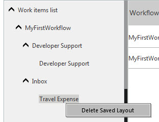

No
Defining Work Items List Layouts for a User
Individual users can perform the following activities to customize Work items list layouts:
Saving Customized Layouts
Customized views of a Work items list can be saved under a personalized name. To save the custom settings:
- Right-click the folder name that contains the customized view. For example, if you have customized the Work items list for Inbox, right-click Inbox.
- Select Save Layout
- Enter the name of the new layout at the Enter the view name prompt. The name of the saved layout appears in the folder list under the folder.
- The new folder displays the same list of items as the default folder that was customized. The work items will also be displayed in the default folder. For example, in the following figure, Inbox has been customized and the layout saved as Travel Expense.
Deleting Customized Layouts
Right-click the folder name for the layout, and then select Delete saved Layout. The layout is deleted.
